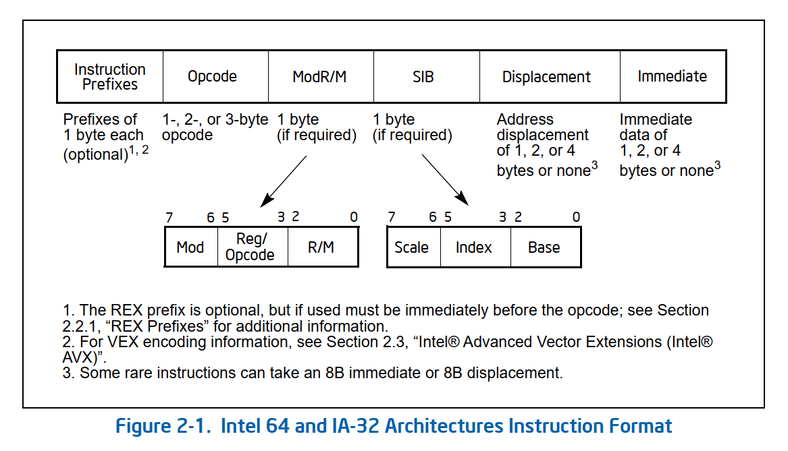
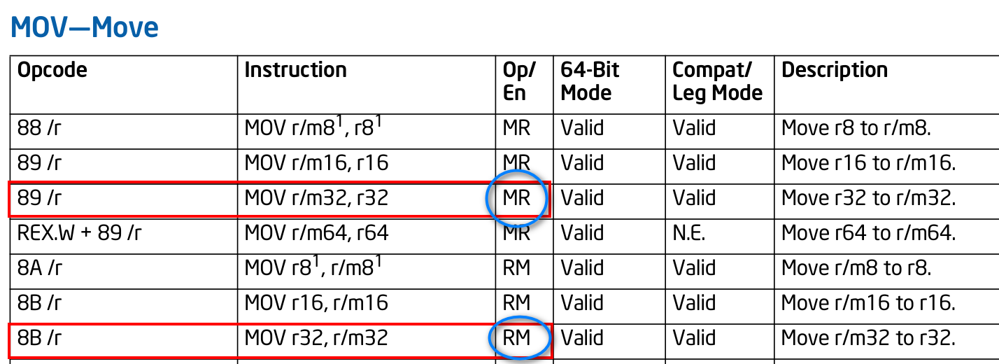
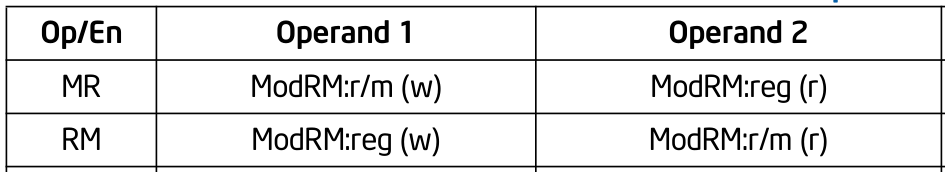

第29天：x86指令格式入门
第29天：x86指令格式入门
1 x86指令的一般格式

vol-2,P31
根据官方的文档，指令格式分为 6 个部分。
前缀（Prefixes）— 可选（0~4 字节）
操作码（Opcode）— 必需（1~3 字节）
ModR/M — 可选（1 字节）
SIB（Scale-Index-Base）— 可选（1 字节）
偏移（Displacement）— 可选（0/1/4 字节）
立即数（Immediate）— 可选（1/2/4 字节）
其中操作码必须有，它表示指令的功能；其他字段可选。
x86 采用不定长指令编码，最短的 1 个字节，最长的可达 15 字节。
下面为读者介绍每个部分。
2 前缀
用于修改指令行为，常见类型：
| 类型 | 字节编码 | 作用 |
|---|---|---|
| 操作数大小重写前缀 | 0x66 |
在 32 位模式下切换为 16 位操作（如 mov ax, bx） |
| 地址大小重写前缀 | 0x67 |
切换为 16 位寻址（如 [bx+si]） |
| 段超越前缀 | 0x2E (CS), 0x36 (SS), 0x3E (DS), 0x26 (ES), 0x64 (FS), 0x65 (GS) |
指定段寄存器 |
| 锁定/重复前缀 | 0xF0 (LOCK), 0xF3 (REP/REPE), 0xF2 (REPNE) |
原子操作或字符串重复 |
因为 cusb 生成的汇编代码用不到前缀，所以一笔带过。
3 操作码
操作码长度为 1~3 字节。
一字节操作码和指令前缀共享指令的第一个字节。CPU 的解码器根据第一个字节的值确定该字节是指令前缀还是操作码。例如碰到指令的第一个字节为 0x66，则识别出这是操作数大小重写前缀；若遇到的是 0xb8，则识别出这是 mov 指令。
两字节操作码总是以 0x0f（转义前缀）开头，后面跟着另一个字节。例如 jne 指令的操作码为 0f,85
三字节操作码的转义前缀有两种，一个是“0f,38”，一个是“0f,3a”，后面再跟一个字节。
csub 生成的汇编指令仅用到 1~2 字节的操作码。
根据编码特征，可以把常见的操作码分成四大类。
3.1 操作码独立表示指令功能
如下表，指令编码中仅有操作码。
| 指令 | 操作码（十六进制），也是指令的编码 |
|---|---|
| ret | cb |
| nop | 90 |
| leave | c9 |
还有一类指令，操作码后面跟着操作数；指令编码中先是操作码，然后跟着操作数。
| 指令 | 操作码（十六进制） | 举例 | 指令编码（十六进制） |
|---|---|---|---|
| int imm8 | cd | int 0x80 | cd 80 |
| jne rel32 | 0f,85 | jne @L100 | 0f 85 xx xx xx xx |
| jmp rel32 | e9 | jmp @return | e9 xx xx xx xx |
| call rel32 | e8 | call foo | e8 xx xx xx xx |
| push imm32 | 68 | push 0x1234 | 68 34 12 00 00 |
注意：imm8 和 imm32 分别表示 8 和 32 位立即数；rel32 表示 32 位相对地址。
3.2 ModR/M和SIB字段指定操作数的访问模式
这类操作码不足以表示指令的全部功能。
| 指令 | 操作码（十六进制） | 举例 |
|---|---|---|
| mov r32, r/m32 | 8b | mov eax, [0x1000] |
| mov r/m32, r32 | 89 | mov [0x1000], ecx |
注：r32 表示一个 32 位寄存器，m32 表示一个 32 位的内存操作数，r/m32 表示 32 位寄存器或者 32 位的内存操作数；
比如说，“mov r32, r/m32” 的操作码是 0x8b
但是寄存器是哪个？内存地址是多少？
仅靠 0x8b 不足以说明以上信息，所以需要 ModR/M 和 SIB 字段；
类似这样的指令还有 add,sub,cmp 等。
ModR/M 和 SIB 字段后文会详细解释。
3.3 ModR/M的reg字段对操作码作补充
1 | |
| 指令 | 操作码（十六进制） |
|---|---|
| imul r/m32 | f7 /5 |
| idiv r/m32 | f7 /7 |
| neg r/m32 | f7 /3 |
| add r/m32, imm32 | 81 /0 |
| sub r/m32, imm32 | 81 /5 |
例如上表中的 imul 和 idiv 指令的操作码都是 f7,如何区分呢？
“/” 后面有一个值，这个值在编码指令的时候会填充到 ModR/M 的 reg 字段。
当 reg = 5 时表示 imul 指令，当 reg = 7 时表示 idiv 指令；此时 reg 字段相当于是对操作码的扩展。
3.4 寄存器编号补充操作码
| 指令 | 操作码（十六进制） | 举例 |
|---|---|---|
| inc r32 | 40 + rd | inc eax |
| dec r32 | 48 + rd | dec ebx |
| push r32 | 50 + rd | push eax |
| pop r32 | 58 + rd | pop ebx |
| mov r32, imm32 | b8 + rd | mov eax, 0x12345678 |
例如，“inc r32” 指令的操作码是 0x40，当指定了某个寄存器作为操作数后，需要把该寄存器的编号加到操作码中。与其说寄存器的编号补充操作码，不如说操作码里面包含着寄存器的编号。
3.5 寄存器的编号
Intel 指令集的寄存器编号是这样规定的：
| 编号 (二进制) | 编号 (十进制) | 32位寄存器 | 16位寄存器 | 8位寄存器 |
|---|---|---|---|---|
000 |
0 | EAX |
AX |
AL |
001 |
1 | ECX |
CX |
CL |
010 |
2 | EDX |
DX |
DL |
011 |
3 | EBX |
BX |
BL |
100 |
4 | ESP |
SP |
AH |
101 |
5 | EBP |
BP |
CH |
110 |
6 | ESI |
SI |
DH |
111 |
7 | EDI |
DI |
BH |
4 ModR/M
1 | |
ModR/M 字段长度是 1 字节，包括 mod,reg,r/m 三个字段。
r/m 字段可以表示内存，也可以表示寄存器;
reg 字段可以是 opcode 的扩展，也可以表示寄存器;
有读者问，如果指令是 “mov ecx, edx”，如何确定 r/m 和 reg 的对应关系呢？
是 ecx 和 r/m 对应，edx 和 reg 对应？
还是 ecx 和 reg 对应，edx 和 r/m 对应？
这个问题问得好！
查一下 Intel 的指令手册，数据传送从 32 位寄存器到 32 位寄存器，只有下面 2 个格式。
| Opcode | Instruction |
|---|---|
| 89 /r | MOV r/m32,r32 |
| 8B /r | MOV r32,r/m32 |
注意：
opcode 中的 “/r” 表示 ModR/M 同时包含寄存器和 r/m 操作数。
不管你选择哪种格式，指令格式中的 r/m32 一定要用 ModR/M 的 r/m 字段编码；
指令格式中的 r32 一定要用 ModR/M 的 reg 字段编码。
为什么这样说呢？
查阅指令手册

注意 Op/En 这列，我用蓝色圆圈圈出来的。上面的表格后面，还有一个表格（Instruction Operand Encoding），是操作数的编码说明。

MR 的意思是，第一个操作数用 r/m 字段编码，第二个操作数用 reg 字段编码；
RM 与之相反，第一个操作数用 reg 字段编码，第二个操作数用 r/m 字段编码；
4.1 mod字段的含义
| mod(二进制) | r/m 的寻址模式 | 举例 |
|---|---|---|
| 00 | 寄存器间接寻址 | [eax] |
| 01 | 寄存器基址 + 8 位偏移 | [eax + 4] |
| 10 | 寄存器基址 + 32 位偏移 | [eax + 0x224488] |
| 11 | 寄存器操作数 | eax |
当 mod = 11b 时，r/m 字段表示寄存器操作数，保存了寄存器编号。
当 mod 取其他值时，r/m 字段表示内存操作数，如上表的前三行。内存操作数中的寄存器（如 eax）依然用 r/m 字段编码，偏移跟在 ModR/M 后面。
我们举例说明。
- 请问 mov ecx, eax 如何编码？
假设我们选择指令格式 mov r32, r/m32;
操作码是 8B /r，“r” 说明 ModR/M 同时包含寄存器和 r/m 操作数。
ecx 的编号是 001b，用 ModR/M 的 reg 字段表示;
eax 的编号是 000b，用 ModR/M 的 r/m 字段表示;
另外，因为 eax 是寄存器，所以寻址模式是寄存器操作数，根据上面的表格得知 mod = 11b
所以 ModR/M = 11 001 000 = 0xc8;
所以完整的编码是 8b,c8;
- 对于 mov ecx, [eax + 4] 如何编码？
因为偏移 4 用 8 位就足够表示，所以 ModR/M(mod) 就要改成 01b,其他字段不变；
ModR/M = 01 001（ecx） 000(eax) = 0x48；
还有一个偏移 4，跟在 ModR/M 后面；
所以完整编码是 8b,48,04；
- 对于 mov ecx, [eax + 0x112288] 如何编码？
因为 0x112288 用 8 位容纳不了，所以 ModR/M(mod) 就要改成 10b,其他字段不变；
ModR/M = 10 001 000 = 0x88；
32 位的偏移跟在 ModR/M 后面；
所以完整编码是 8b,88,88,22,11,00 (注意，最后的 00 是补齐 32 位)
x86-32 寻址方式如下表：
| 序号 | 类型 | 形式 | 示例 | 说明 |
|---|---|---|---|---|
| 1 | 立即数 | imm |
mov eax, 10 |
硬编码在指令里 |
| 2 | 寄存器 | reg |
mov eax, ebx |
mod 字段可以表示 |
| 3 | 绝对地址 | [addr] |
mov eax, [my_var] |
mod = 00b, r/m = 101b |
| 4 | 寄存器间接 | [reg] |
mov eax, [esi] |
mod 字段可以表示，但是 [ebp] 除外，[esp] 也除外 |
| 5 | 基址+偏移 | [base + disp] |
mov eax, [ebp + 8] |
mod 字段可以表示；但是[esp + disp] 除外 |
| 6 | 变址+比例+偏移 | [index*scale + disp] |
mov eax, [edi*4 + 8] |
需要 SIB 字段 |
| 7 | 基址+变址+比例+偏移 | [base + index*scale + disp] |
mov eax, [ebx + esi*4 + 8] |
需要 SIB 字段 |
mod 字段可以表示的寻址，仅包含上面表格的 2，4，5
其他的寻址如何表示呢？
对于序号 1 的立即数，Intel 指令集的立即数一般都是硬编码在指令里，不需要 ModR/M 字段。
例如 cmp eax, 0x95279527
编码是 3D 27 95 27 95
对于序号 3 的直接寻址，例如 mov eax,[0x86543210]；
指令集规定，当 mod = 00b, r/m = 101b 的时候，表示 32 位直接寻址模式，32 位地址跟在 ModR/M 字段的后面。
举个例子，mov eax,[0x86543210] 如何编码？
根据指令格式 MOV r32, r/m32，其操作码是 8b /r；
r32 对应 eax，reg 字段的编码是 000b，再结合 mod = 00b, r/m = 101b；
所以 ModR/M=00 000 101 = 0x05；
所以 mov eax,[0x86543210] 的指令编码是 8B 05 10 32 54 86；
有细心的读者发现了，mod = 00b 的时候，不是寄存器间接寻址吗？
101b 对应的寄存器是 ebp,那 [ebp] 这种寻址方式如何表示呢？
问得好！
是的，因为鸠占鹊巢，[ebp] 确实无法表示了，只能迂回一下，表示成 [ebp + 0]；
例如 “mov ecx, [ebp]” 的指令编码其实是 “mov ecx, [ebp + 0]” 的指令编码；
所以 mod = 01b, reg = 001, r/m = 101b(ebp)；
ModR/M = 0100 1101 = 0x4d；
所以完整的编码是 8b,4d,00；
对于表格中的序号 6 和 7，属于比较复杂的内存访问，ModR/M 靠一己之力搞不定，只能请 SIB 来帮忙了。
4.2 受委屈的esp
指令集规定，当 mod != 11b, r/m = 100b 的时候，表示引导 SIB 字段。
此时，esp 不高兴了，说 mod != 11b 可以理解，因为 11b 表示寄存器操作数，访问内存当然不用考虑寄存器操作数。
可是 r/m = 100b，这是什么规定？
100b 是我 esp 的编码啊，要是把我的编码给占用了，那下面的指令怎么表示呢？
例如：
mov eax,[esp]
mov eax,[esp + 8]
mov eax,[esp + 0x88886666]
这也太欺负人了吧？都说 ebp 运气不好，因为 [ebp] 无法表示了，只能用 [ebp + 0]
可是我 esp 损失更大啊！我抗议！
Intel 官方表示这个世界哪有公平可言？你 esp 就不要抱怨了。
4.3 特殊ModR/M字段
| mod | r/m | r/m 寻址模式 | 举例 |
|---|---|---|---|
| 00 | 101 | 32 位直接寻址 | [0x88886666] |
| 00 | 100 | 引导 SIB | [?] |
| 01 | 100 | 引导 SIB + 8 位偏移 | [? + 0x72] |
| 10 | 100 | 引导 SIB + 32 位偏移 | [? + 0x95279528] |
为了表扬 ebp 和 esp 的牺牲精神，我列出了这个表格；
为了成全 32 位直接寻址，[ebp] 只好时刻抱着一个鸡蛋，变成 [ebp + 0] ；
为了引导 SIB 字段，esp 做出了怎样的牺牲呢？后面会讲。
5 SIB字段
1 | |
| 字段 | 位数 | 含义 |
|---|---|---|
| scale | 2 bits | 缩放因子 |
| index | 3 bits | 索引寄存器编号 |
| base | 3 bits | 基址寄存器编号 |
SIB 的名字就是 scale,index,base 这三个家伙的首字母。
SIB 字段定义的寻址格式为：[base + index * 2^scale^]
当然，如果有偏移，那么寻址的时候也要加上去。
base 和 index 都是 3 bits，用来编码寄存器；
scale 是 2 bits，取值 0，1，2，3；
请问指令 mov ecx, [eax + ebx] 的编码是什么？
选择指令格式 MOV r32, r/m32；
其操作码是 8b /r
如果把 eax 看成是 base, 把 ebx 看成是 index
那么 scale = 0， disp = 0， index = 011， base = 000
mod = 00b(因为不带偏移), r/m = 100b, reg = 001b(ecx)
所以 ModR/M = 0000 1100 = 0x0c
SIB = 0001 1000 = 0x18
所以完整的编码是
8b,0c,18
如果把 ebx 看成是 base, 把 eax 看成是 index
ModR/M = 0x0c
scale = 0，disp = 0，index = 000，base = 011
SIB = 00000011 = 0x03
所以完整的编码是
8b,0c,03
请问指令 mov ecx, [eax + ebx * 8 + 0x12344320] 的编码是什么？
eax 是 base, ebx 是 index
base = 000b,index = 011b,scale = 11b
mod = 01b, r/m = 100b, reg = 001b(ecx)
所以 ModR/M = 0100 1100 = 0x4c
SIB = 1101 1000 = 0xd8
所以完整的编码是
8b 4c d8 20 43 34 12
5.1 让Index消失
有的读者说，你这个寻址好复杂啊！[base + index * 2^scale^]
我也用不上这么复杂的，能不能让 index 消失？
可以，指令集规定，当 sib 的 index = 100b 时，不存在 index
例如 mov ecx, [eax + 0x11223344]
如果要用 SIB 字段，base = 000b(eax),index =100b,scale = 0,1,2,3(都可以)
SIB = 00100000 = 0x20
SIB = 01100000 = 0x60
SIB = 10100000 = 0xa0
SIB = 11100000 = 0xe0
所以编码有四种：
8B 8C 20 44 33 22 11（scale = 0）
8B 8C 60 44 33 22 11（scale = 1）
8B 8C a0 44 33 22 11（scale = 2）
8B 8C e0 44 33 22 11（scale = 3）
也可以不使用 SIB，用 mod = 10b, 选择 “寄存器基址 + 32 位偏移”
mod = 10b, r/m = 000b(eax), reg = 001b(ecx)
所以 ModR/M = 1000 1000 = 0x88
编码是 8B 88 44 33 22 11
此时，esp 又跳出来了，什么？当 sib 的 index = 100b 时，不存在 index；
怎么受伤的总是我？难道我 esp 就没有资格当变址寄存器吗？
mov ecx, [eax + esp * 8] 这种指令不行吗？
intel 官方说，这个指令不合法。总之，esp 不能当变址寄存器。
intel 继续说，你不要闹了，之前的问题，我们已经帮你想好了对策。
你不是抱怨用 ModR/M 寻址无法表示以下指令吗？
mov eax,[esp]
mov eax,[esp + 8]
mov eax,[esp + 0x88886666]
其实我们让 index 消失就是为了你啊。你现在可以采用 SIB 字节来表示这些指令了。
比如 mov eax,[esp]
选择指令格式 MOV r32, r/m32；
其操作码是 8b /r
mod = 00b,r/m = 100b
ModR/M = 00 000(eax) 100 = 0x04
scale = 00b(其他值也行),index = 100b，base = 100b
SIB = 00 100 100 = 0x24
所以编码是 8B 04 24；
再比如 mov eax, [esp + 8]
mod = 01b（因为有1字节的偏移）, r/m = 100b
ModR/M = 01 000(eax) 100 = 0x44
SIB 不变，依然是 0x24
编码是 8B 44 24 08
再比如 mov eax,[esp + 0x12345678]
mod = 10b（因为有4字节的偏移），r/m = 100b
所以 ModR/M = 10 000(eax) 100 = 0x84
SIB 不变，依然是 0x24
编码是 8B 84 24 78 56 34 12
5.2 让base消失
Intel 规定，当 ModR/M 的 mod = 00b 且 SIB 的 base = 101b 的时候，不存在基址寄存器，这时候的寻址格式为
[index * 2^scale^ + disp32(必须有)]
注意，必须有 disp32
例如 mov ecx, [eax * 8 + 0x12345678]
mod = 00b,rm = 100b,reg = 001b(ecx)
base = 101b, scale = 11b, index = 000b(eax)
ModR/M = 00 001 100b = 0x0c
SIB = 11 000 101b = 0xc5
所以完整的编码是 8B 0c c5 78 56 34 12
让基址寄存器消失要付出代价，例如当指令中没有偏移的时候
mov ecx, [eax * 8]
必须按照 mov ecx, [eax * 8 + 0x00000000] 处理，指令编码为
8B 0c c5 00 00 00 00(和上个例子一样，就是把偏移换成 4 字节的 0)
等于要多写 4 字节的 0
这时候 ebp 又不高兴了，什么？mod = 00b 且 SIB 的 base = 101b，不存在基址寄存器？
101 是我的编号啊，你把我编号占用了，那我不能当基址寄存器了！为啥剥夺我的权利？
intel 官方说：没有为啥，反正就是 mod = 00b 的时候，你不能做基址寄存器。
但是当 mod = 01b 或者 10b 的时候，你还是可以当基址寄存器的。
例如
mov ecx, [ebp + eax * 8 + 4]
mod = 01b, r/m = 100b,reg = 001b(ecx)
scale = 11b,base = 101b(ebp),index = 000b(eax)
ModR/M = 01001100 = 0x4c
SIB = 11000101 = 0xc5
所以完整编码是 8b 4c c5 04
ebp 说，那指令 mov ecx, [ebp + eax * 8] 怎么办？
本来 mod = 00b 且 r/m = 100b 的时候，只有 SIB，但是没有偏移。
现在我如何表示这种没有偏移的指令？
intel 官方说：你忘了，之前你不是喜欢抱个鸡蛋吗？你继续抱啊！
mov ecx, [ebp + eax * 8 + 0]
这样不就可以了,指令编码是 8b 4c c5 00，就多了一个字节。
6 偏移和立即数
偏移在指令中如果存在，则紧跟 ModR/M、SIB 字段之后，且按照小端字节序方式存储；
立即数在指令中如果存在，则紧跟 ModR/M、SIB、偏移字段之后，且按照小端字节序方式存储。
附录：操作码常用符号说明
指令手册的 opcode 列，除了主操作码，还可能用某些符号描述编码规则。
| 符号 | 含义 | Opcode 举例 | 指令格式举例 | 涉及到的章节 |
|---|---|---|---|---|
/digit |
ModR/M 的 reg 字段用于扩展 opcode | FF /4 | JMP r/m32 | 3.3 |
/r |
ModR/M 同时包含寄存器和 r/m 操作数 | 8A /r | MOV r8,r/m8 | 3.2 |
cb/cw/cd/cp |
相对偏移量（跳转/调用） | E9 cd | JMP rel32 | 3.1 |
ib/iw/id |
立即数（1/2/4 字节） | 3D id | CMP EAX,imm32 | 3.1 |
+rb/+rw/+rd |
寄存器编号加到基础 opcode 上 | B8 +rd | MOV r32,imm32 | 3.4 |
以上列出了 5 种符号，分别举例如下。
例1：jmp eax
这是一条绝对跳转指令，目标地址就在 eax 中。
Opcode = 0xFF
ModR/M(reg) = 4
因为 ModR/M(reg) 用于扩展 opcode,所以寄存器 eax 的编码用 ModR/M(rm) 字段
当 mod = 11b 的时候，表示 ModR/M(rm) 是寄存器操作数
ModR/M(rm) = 0（eax）
所以，ModR/M = 11 100 000b = 0xE0
所以，jmp eax 的指令编码是 FF E0
例2：mov dl, cl
Opcode = 8a
ModR/M(rm) = cl = 001b
ModR/M(reg) = dl = 010b
mod = 11b
所以，ModR/M = 11010001 = 0xD1
所以 MOV dl, cl 的指令编码是 8A D1
例3： jmp 0x11223300
1 | |
编码是 E9 FB 32 22 01
分析:1、当前指令地址: 0x10000000
2、指令长度: E9 cd 指令全长为 5 字节（1 字节 Opcode + 4 字节偏移）。
3、下一条指令地址 (Next IP): 0x10000000 + 5 = 0x10000005
4、目标地址 (Target): 0x11223300
5、计算位移 (Rel32):Target - Next IP0x11223300 - 0x10000005 = 0x012232FB
6、转换成小端序字节流: FB 32 22 01
例4：cmp eax, 0x95279527
编码是 3D 27 95 27 95
例5：mov ecx, 0x11223344
这个指令的编码格式为 B8 +rd
ecx 的编号是 1，B8+1 = B9
所以完整的编码是 B9 44 33 22 11
本文到这里就结束了。不要求读者记忆这些内容，等后面用代码实现的时候，可回到本文查阅。孤立的知识不容易掌握，最好的方法是把知识放到应用场景中学习。我们边干边学！